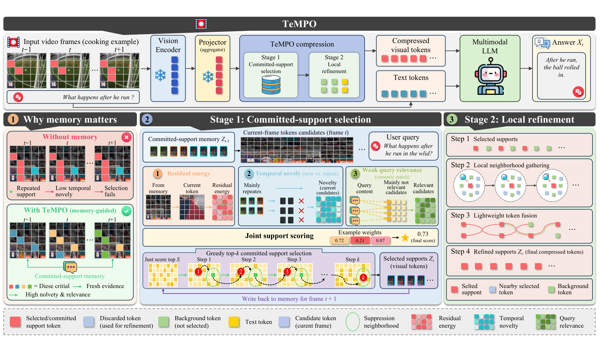

TeMPO is a frame-causal token compressor for video LLMs. It remembers the visual support already delivered to the language model — and spends your token budget only on fresh evidence. No retraining. No backbone changes. No extra budget.
Pick a scenario. TeMPO sweeps the sampled frames once — compressing each one against its committed-support memory — then hands the language model a fraction of the tokens and answers the question.
Frame-local selectors reset their state every frame. Whatever the scoring rule — attention, diversity, temporal statistics — they keep retaining token supports that overlap with what earlier frames already committed to the LLM. The budget goes to evidence the model has already seen.
⌁ conceptual simulation of the selection dynamics — measured support-overlap results are in the paper
TeMPO turns frame-wise selection into a frame-causal decision process. Three pieces, all training-free, all at inference time.
The retained support of previous frames is kept as a compact, permutation-invariant set of metric features — a causal record of what the LLM has already received.
Each candidate is scored by the energy it still explains after projecting out committed and already-selected directions — novelty over noise, blended with query relevance.
Discarded tokens are folded into their nearest retained neighbors with similarity weights — local coverage is restored without adding a single token.
Compression runs between the projector and the language model: Stage 1 selects the committed support under the memory, Stage 2 refines it with parameter-free fusion — then writes the support back for the next frame.

Drops in at inference. Weights, projector, and tokenizer stay untouched.
Strictly online — no look-ahead, no second pass. Streaming-friendly.
RETAIN_RATIO sets the budget. Everything else has sensible defaults.
Recovers local coverage from discarded tokens at zero extra token cost.
Vendored LLaVA-NeXT + lmms-eval with five video benchmarks and one-command scripts.
Permissive license, readable reference implementation alongside the fast one.
from llava.model.builder import load_pretrained_model from tempo import tempo tokenizer, model, processor, _ = load_pretrained_model( "lmms-lab/llava-onevision-qwen2-7b-ov", None, "llava_qwen", device_map="auto", multimodal=True, ) model = tempo(model) # ← visual tokens are now compressed at inference
# four video benchmarks, 10% token budget, one command RETAIN_RATIO=0.10 bash scripts/eval_ov7b_tempo.sh # LLaVA-Video backbone RETAIN_RATIO=0.10 bash scripts/eval_llava_video_tempo.sh # vanilla control under the identical harness: just unset WRAPPER
# single-video question answering RETAIN_RATIO=0.10 python demo.py \ --video kitchen.mp4 \ --question "What happens after he opens the pot lid?"
All configuration is environment variables, read at inference time — nothing to subclass, nothing to rebuild.
WRAPPER—Method selector for lmms-eval runs: tempo (vectorized) or tempo_v1 (loop-form reference).RETAIN_RATIO0.25Fraction of visual tokens retained per frame — the budget. 0.10 keeps 72 of 729 tokens.TEXT_ALPHA0.15Weight of text-conditioned relevance in the joint selection score.TEMPO_BASIS_CAP48Size of the committed-support memory — basis vectors carried across frames.